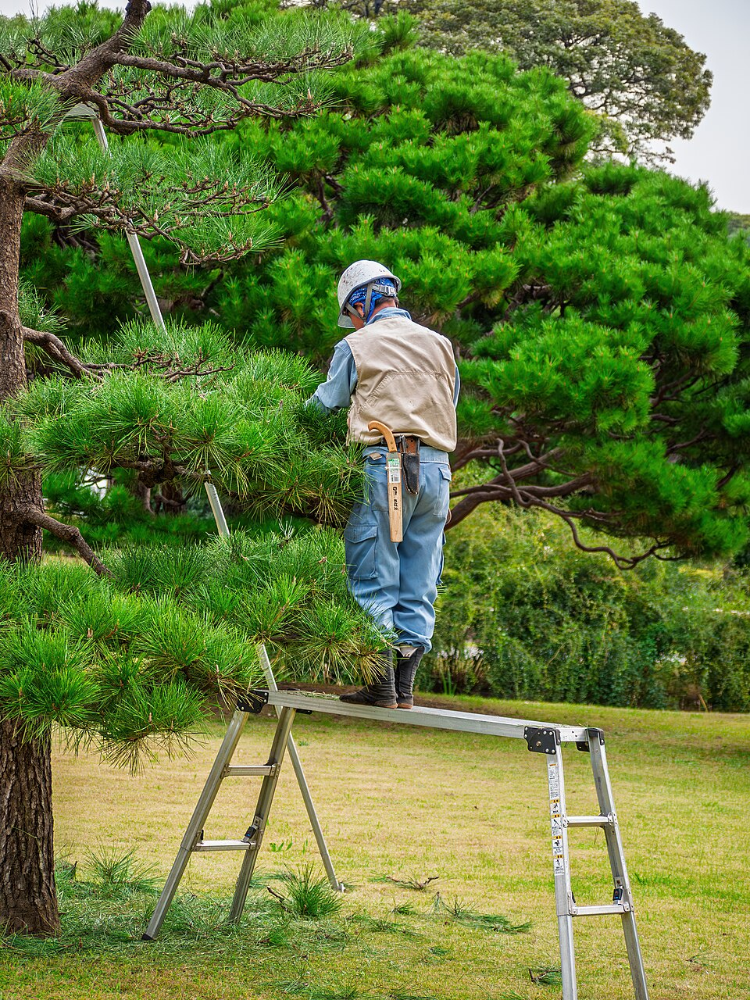
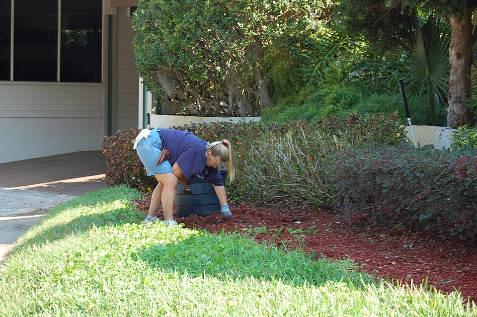
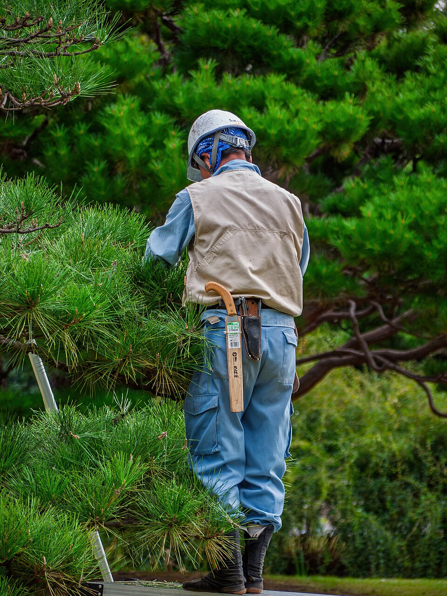
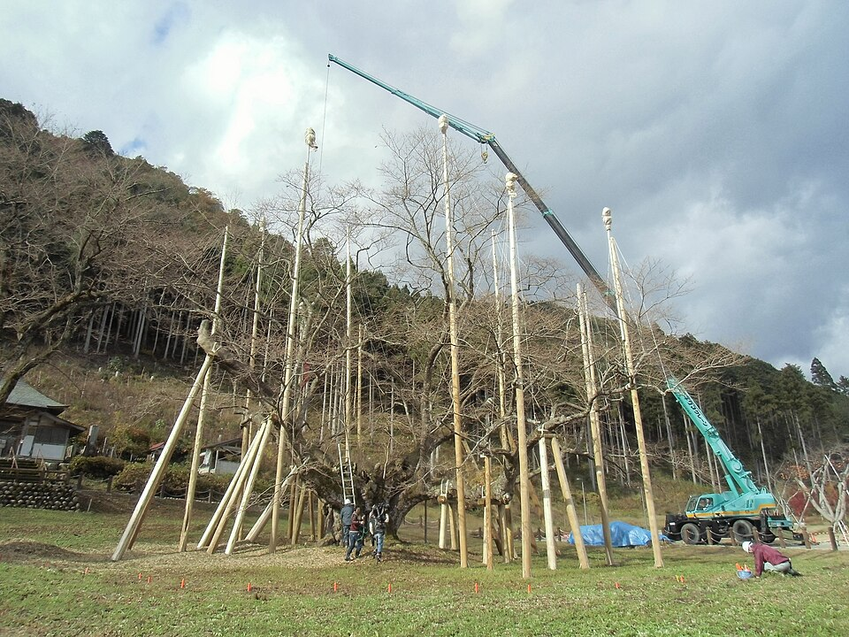
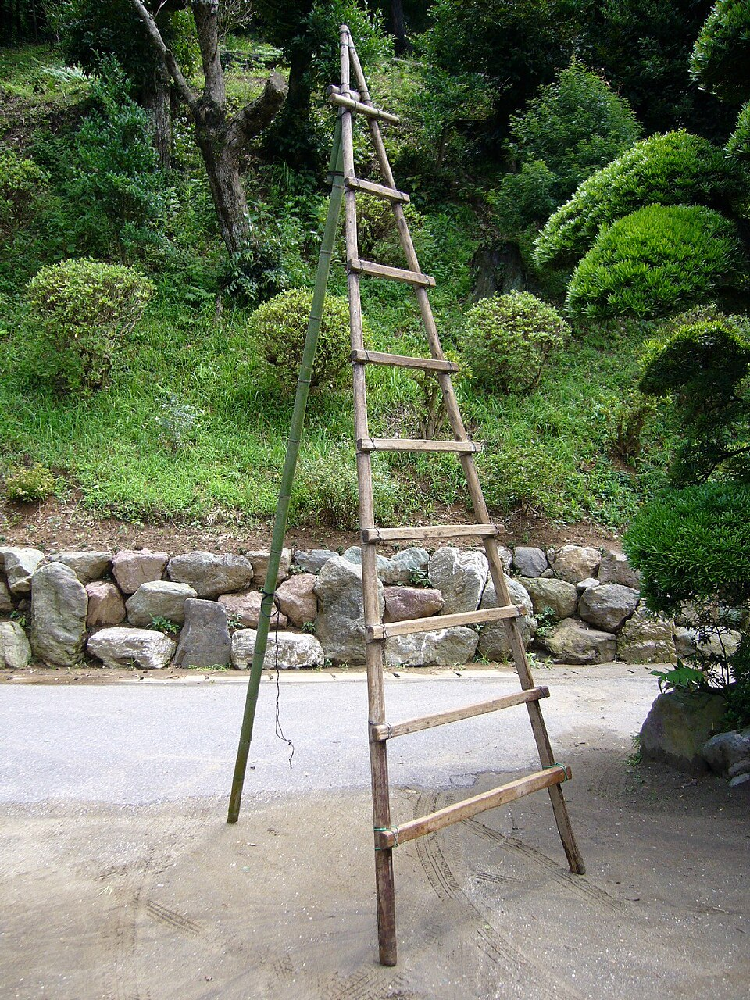
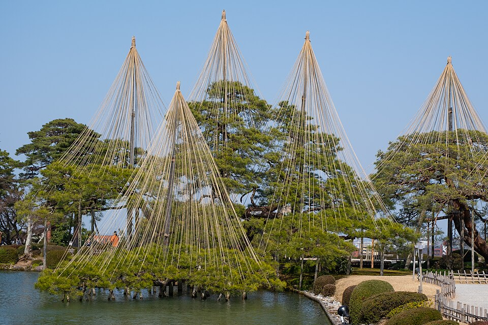
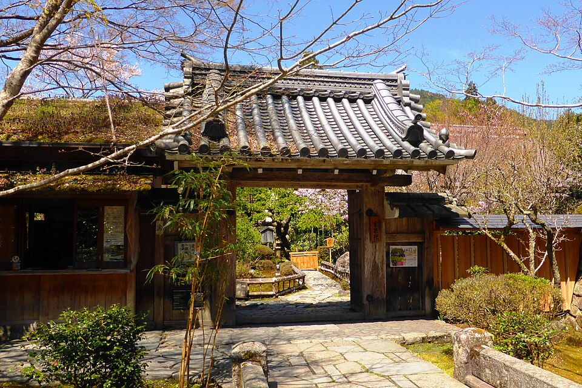

庭師見習い募集 2名・未経験可
寺の松と
町の庭の手入れ
写真：浜離宮の松と庭師（東京）／R. Möller Ermell・CC BY-SA
仕事は、2つの現場です
1年の仕事のおよそ7割が町の個人宅の庭、残りが観松寺の松です。どちらも親方と先輩について、同じ班で回ります。

個人宅の庭 年に約320軒
- すること
- 植木の剪定、生垣の刈り込み、草取り、消毒、落ち葉の掃除
- 1軒の時間
- 半日から2日。3〜4人の班で、軽トラ2台で行きます
- お客さん
- 鷺坂市内と隣の町。8割が毎年同じ時期に頼んでくださる家です
写真：植え込みの草取り（米国）／VisitCentralFL・CC BY

観松寺の松 5月と11月
- すること
- 5月は新芽を摘む「みどり摘み」、11月は古い葉をむしる「もみあげ」。12月に雪吊り
- 松の数
- 本堂前の黒松7本と、山門の門かぶりの松1本
- 続いた年
- 先代の代から43年、毎年うちが手入れしています
写真：浜離宮の松と庭師（東京）／R. Möller Ermell・CC BY-SA
見習いの1年
庭の仕事は季節で決まります。4月に入った人が、月ごとに何を任されるか。月を選んでください。

写真：淡墨桜の雪吊り作業（岐阜）／山本剛士・CC BY-SA

写真：木の三脚脚立（日本）／katorisi・CC BY
1日の流れ
11月の、個人宅の現場の日です。朝は置き場に集まり、班ごとに軽トラで出ます。
- 置き場で朝礼今日の家と段取りを聞き、脚立・はさみ・竹ぼうきを積みます。
- 現場に着くお客さんと隣の家にあいさつ。道に養生のシートを敷きます。
- 一服（15分）お茶を出してくださる家も多いです。
- 昼（60分）軽トラか、近くの公園で。
- 一服（15分）
- 掃除切った枝と葉を集め、竹ぼうきで掃きます。見習いの大事な仕事です。
- 置き場に戻る枝をおろし、はさみの手入れ。
- 終わり実働8時間。残業は月平均6時間（12月に多い）。
雨の日は 剪定はしません。置き場で、はさみ研ぎ、竹垣の材料づくり、苔の植え替えをします。休みにはなりません。
給与と条件
月給 212,000円から
見習い1年目の額です。固定残業代は含みません。残業した分は1分単位で払います。
| 募集 | 庭師見習い 2名（正社員・試用期間3か月、条件は同じ） |
|---|---|
| 経験・資格 | 未経験可。普通自動車免許（AT限定可）。入社後に取る人も相談に乗ります |
| 昇給・賞与 | 昇給 年1回（4月）。賞与 年2回（2025年度の実績 計1.8か月分） |
| 手当 | 通勤手当（月15,000円まで）、資格手当（2級造園技能士 月5,000円、1級 月10,000円） |
| 支給するもの | 作業着・地下足袋・ヘルメット・安全帯。はさみは年30,000円まで会社が持ちます |
| 勤務時間 | 7:30〜17:00（休憩 昼60分・一服15分×2） |
| 休日 | 日曜・祝日・第2と第4土曜、夏季3日、年末年始6日。年間休日105日 |
| 勤務地 | 置き場（鷺坂市松ヶ丘2-14）に集合し、市内と隣の町の現場へ。転勤なし |
| 保険など | 健康保険・厚生年金・雇用保険・労災保険、退職金（中小企業退職金共済） |
| 受験の費用 | 造園技能士の受験料と講習費は会社が払います |

写真：兼六園の雪吊り（金沢）／Winniepix・CC BY
応募の手順
いきなり応募しなくてかまいません。先に半日、現場を見てから決めてください。見学のあとに断っても大丈夫です。
- 見学
半日。置き場と、その日の現場を見ます。火曜か木曜の8:00から。服は動きやすいもので。
- 応募
見学のあと、電話かこのページで。履歴書は面接の日に持ってきてください。
- 面接
置き場で30分。親方と、3年目の先輩が話を聞きます。
- 1日いっしょに
現場で1日、掃除と運搬を手伝ってもらいます。日当10,000円を払います。
- 内定
1週間以内に電話で伝えます。入社は相談して決めます。

写真：宝泉院の門（京都）／Tetsuhiro Terada・CC BY
三石造園
1979年、先代が置き場に3つの石を据えて始めました。社名はそこから。いまは社員12人で、町の庭と寺の松を手入れしています。
2026年11月現在
| 会社名 | 株式会社三石造園 |
|---|---|
| 創業 | 1979年（法人化 1996年） |
| 代表 | 代表取締役 三石 健吾（2代目） |
| 社員 | 12人（庭師8人・見習い1人〔3年目〕・事務2人・代表1人） |
| 資格 | 1級造園技能士 3人、2級造園技能士 4人、1級造園施工管理技士 2人 |
| 所在地 | 鷺坂市松ヶ丘2-14（置き場と事務所） |
| 仕事 | 個人宅の庭の手入れ・植栽、寺社の松の手入れ、竹垣の製作 |
| 電話 | 0000-00-0000 |